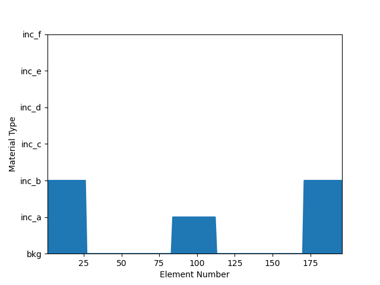
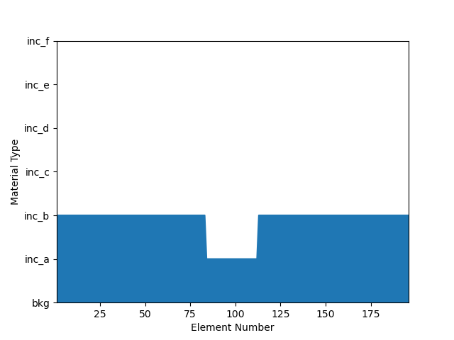

Note
Go to the end to download the full example code
1D grating#
Increase complexity of grating to contain 2 inclusions that are interleaved.
import time
import datetime
import numpy as np
from multiprocessing import Pool
from emustack import materials
from emustack import objects
from emustack import plotting
from emustack.stack import *
start = time.time()
# Remove results of previous simulations.
plotting.clear_previous()
################ Simulation parameters ################
# Select the number of CPUs to use in simulation.
num_cores = 2
################ Light parameters #####################
wl_1 = 400
wl_2 = 800
no_wl_1 = 2
wavelengths = np.linspace(wl_1, wl_2, no_wl_1)
light_list = [objects.Light(wl, max_order_PWs = 5, theta = 0.0, phi = 0.0) for wl in wavelengths]
# The period must be consistent throughout a simulation!
period = 300
# Define each layer of the structure
# We need to inform EMUstack at this point that all layers in the stack will
# be at most be periodic in one dimension (i.e. there are no '2D_arrays's).
superstrate = objects.ThinFilm(period, height_nm = 'semi_inf', world_1d=True,
material = materials.Air)
substrate = objects.ThinFilm(period, height_nm = 'semi_inf', world_1d=True,
material = materials.Air)
# Define 1D grating that is periodic in x and contains 2 interleaved inclusions.
# Inclusion_a is in the center of the unit cell. Inclusion_b has diameter
# diameter2 and can be of a different refractive index and by default the
# centers of the inclusions are seperated by period/2.
# See Fortran Backends section of tutorial for more details.
grating = objects.NanoStruct('1D_array', period, int(round(0.15*period)),
diameter2 = int(round(0.27*period)), height_nm = 2900,
background = materials.Material(1.46 + 0.0j), inclusion_a = materials.Material(5.0 + 0.0j),
inclusion_b = materials.Material(3.0 + 0.0j),
loss = True, lc_bkg = 0.0051)
# To dictate the seperation of the inclusions set the Keyword Arg small_space to the
# distance (in nm) between between the inclusions edges.
grating_2 = objects.NanoStruct('1D_array', period, int(round(0.15*period)),
diameter2 = int(round(0.27*period)), small_space = 50, height_nm = 2900,
background = materials.Material(1.46 + 0.0j), inclusion_a = materials.Material(5.0 + 0.0j),
inclusion_b = materials.Material(3.0 + 0.0j),
loss = True, lc_bkg = 0.0051)
def simulate_stack(light):
################ Evaluate each layer individually ##############
sim_superstrate = superstrate.calc_modes(light)
sim_grating = grating.calc_modes(light)
sim_substrate = substrate.calc_modes(light)
###################### Evaluate structure ######################
""" Now define full structure. Here order is critical and
stack list MUST be ordered from bottom to top!
"""
# For demonstration we only simulate one of the gratings defined above.
stack = Stack((sim_substrate, sim_grating, sim_superstrate))
stack.calc_scat(pol = 'TE')
return stack
pool = Pool(num_cores)
stacks_list = pool.map(simulate_stack, light_list)
# Save full simo data to .npz file for safe keeping!
np.savez('Simo_results', stacks_list=stacks_list)
- 
- 
The total transmission should be zero.
plotting.t_r_a_plots(stacks_list)
print('\n*******************************************')
# Calculate and record the (real) time taken for simulation,
elapsed = (time.time() - start)
hms = str(datetime.timedelta(seconds=elapsed))
hms_string = 'Total time for simulation was \n \
%(hms)s (%(elapsed)12.3f seconds)'% {
'hms' : hms,
'elapsed' : elapsed, }
print(hms_string)
print('*******************************************')
print('')
# and store this info.
python_log = open("python_log.log", "w")
python_log.write(hms_string)
python_log.close()
*******************************************
Total time for simulation was
0:00:27.021011 ( 27.021 seconds)
*******************************************
Total running time of the script: (0 minutes 27.122 seconds)
Estimated memory usage: 15 MB